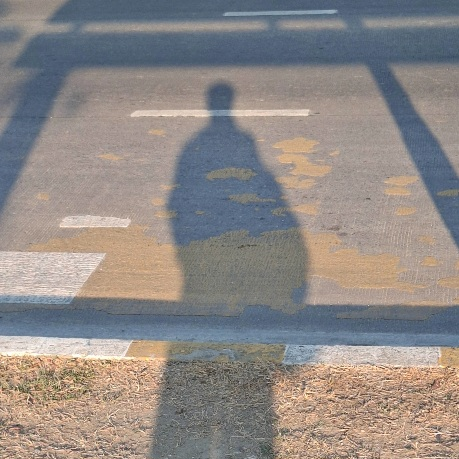
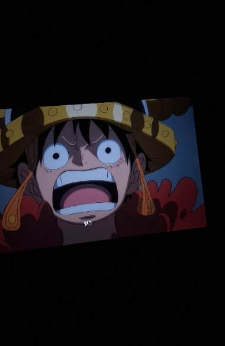

ชื่อ-นามสกุล : Naphat Phanthong
ชื่อเล่น :Boss
สาขาวิชา : CAI
กลุ่มเรียน : 1.2-1 G1

เหตุผลที่อยากเรียน Full stack web development
-การพัฒนาตัวเองในการเขียนโค้ดและเว็บความคาดหวังต่อวิชานี้
-การพัฒนาตัวเองในการเขียนโค้ดให้สามารถในไปใช้ในการทำงานได้อะไรจุดอ่อน ที่ตนเองต้องพัฒนาเกี่ยวกับทักษะ Programming และ แนวทางการพัฒนา
-ยังไม่มีประสบการณ์ในการเขียนโค้ดเว็บ เพราะเริ่มต้นจากศูนย์
-แนวทางในการพัฒนา เริ่มจากการฝึกเขียนโค้ดหรือเล่นเกมที่เกี่ยวกับการสร้างเว็บ
